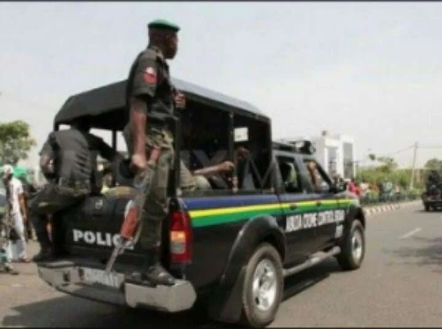

Security & Crime · 18 Nov 2026
Police tighten security ahead of Tinubu rally, Obi’s Anambra visit

The Anambra State Police Command has intensified security operations across the state ahead of a campaign rally for President Bola Tinubu’s re-election and a town hall meeting by the presidential candidate of the Nigeria Democratic Congress, Peter Obi. Read More: https://punchng.com/police-tig
Multiple independent publishers are reporting on the same development: Police tighten security ahead of Tinubu rally, Obi’s Anambra visit.
The available reports place the development in the Security & Crime category. The accounts were compared for agreement on the central event rather than simply shared names or broad topics.
One of the available reports describes the development this way: The Anambra State Police Command has intensified security operations across the state ahead of a campaign rally for President Bola Tinubu’s re-election and a town hall meeting by the presidential candidate of the Nigeria Democratic Congress, Peter Obi. Read More: https://punchng.com/police-tighten-security-ahead-of-tinubu-rally-obis-anambra-visit/
Readers should consult the linked source reports for additional context, updates and details that may change as the story develops.
Sources
This article was produced by the C. O. Eric AI Newsroom from the cited sources. It is published only after automated evidence and safety checks.